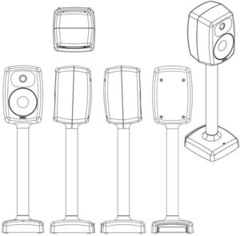

Trade Mark Journal No.2025/042 17 October 2025
WO0000001868702 (9)
Office of origin: European Union Intellectual Property Office (EUIPO)
Date of International Registration:28 May 2025
Date of designation in the UK:
28 May 2025

3 Dimensional
International priority date claimed: 29 November 2024
(European Union Intellectual Property Office (EUIPO))
(019113303)
- Class 9
- Audio equipment; audio apparatus; audio electronic apparatus; audio processing apparatus; audio frequency apparatus; frequency meters; optical frequency metrology devices; audio amplifiers; audio recordings; loudspeakers; loudspeaker systems; studio monitor loudspeakers; loudspeakers with built in amplifiers; audio speakers for home; audio loudspeaker systems; surround processors; loudspeaker stands; loudspeaker housings; loudspeaker cabinets; racks for loudspeakers; loudspeaker drive units; speakers; speaker enclosures; public address speaker systems; soundbar speakers; sub-woofers; audio players; electronic audio/video signal distribution systems; electronic control systems; control apparatus for audio signals; audio interfaces; digital audio interface apparatus; apparatus and instruments for processing sound; apparatus and instruments for transmitting sound; apparatus for amplifying sound; digital sound processors; electronic audio signal processors for compensating sound distortion in speakers; mixing desks [sound]; multichannel sound processors; sound measuring apparatus; portable sound reproducing apparatus; amplifiers; apparatus for the reproduction of sound; apparatus for recording sound; monitors; monitoring instruments; equalisers [audio apparatus]; sound level meters; high fidelity apparatus; high fidelity audio apparatus; hi-fi sound systems; testing and quality control devices; calibrators; calibrating apparatus; control amplifiers; automatic control apparatus; network controlling apparatus; voice processing systems; loudspeaker cables; audio cables; coaxial cables; communications cables; ethernet cables; audio cable connectors; headphones; headsets; cases for headphones; adapter cables for headphones; audio adaptors; coaxial adaptors; electric adaptors; remote controls; microphones; microphone stands; sound recording carriers; software; application software; software and applications for mobile devices; testing software; computer programmes [programs], recorded; computer programs [downloadable software]; computer software applications, downloadable; computer software platforms; platform software; data processing software; audio editing software; video editing software; editing software; computer software for controlling the operation of audio and video devices; software to control and improve audio equipment sound quality; 3d animation software; 3d computer graphics software; simulation software; data and image processing software for making three dimensional models; computer programs and software for image processing used for mobile phones; software for processing images, graphics, audio, video and text; computer programmes for image processing; image management software; cloud computing software; interface software; musical instrument digital interface controllers being audio interfaces; music-composition software; computer software for creating and editing music and sounds; computer software for processing digital music files; education software; musical sound recordings; downloadable musical sound recordings; downloadable music files; computer software downloaded from the internet; computer software downloadable from global computer information networks; children's educational software; computer software concerned with children's education; community software; computer network hubs; network hubs; networking software; computer software platforms for social networking.
Genelec Oy
Representative: Abion UK Limited, The Forum, St Pauls, 33 Gutter Lane London EC2V 8AS UNITED KINGDOM